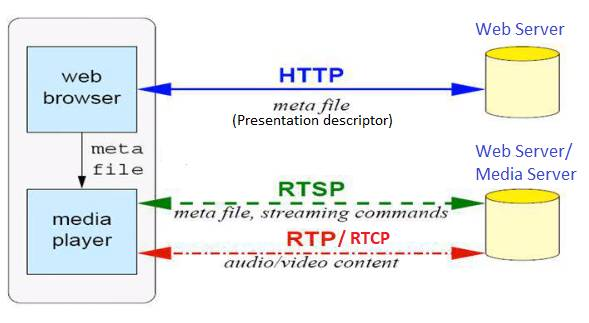
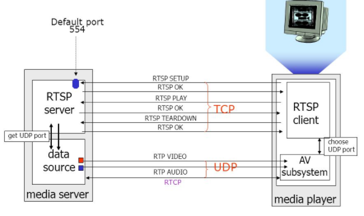
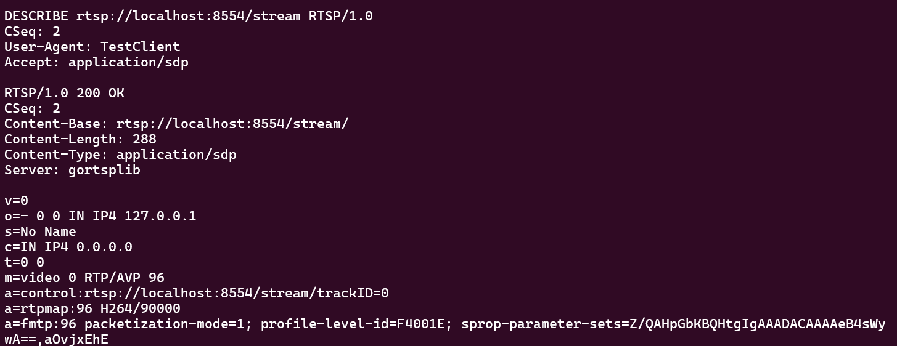
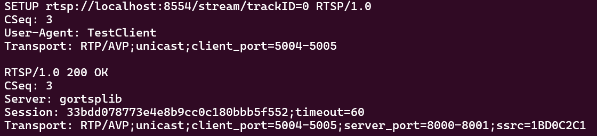
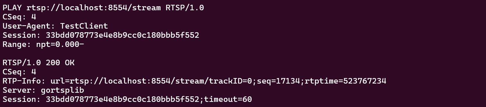

Grupo 5: João Pedro Peçanha Cotrim, Marco Antonio Tronco Felix, Pedro Ivo Lopes Pinheiro
1. Introdução
O RTSP (Real Time Streaming Protocol) é um protocolo de nível de aplicação projetado para controlar a entrega de dados com propriedades de tempo real. Ao contrário do que muitos pensam, o RTSP não transmite os dados de mídia em si, mas atua como um "controle remoto" para o servidor de mídia.
Definido pelo IETF (Internet Engineering Task Force) na especificação RFC2326, o RTSP, tornou-se amplamente utilizado em sistemas de vigilância, videomonitoramento, transmissão ao vivo, videoconferências e plataformas de mídia digital. Nessas aplicações o seu trabalho é fornecer mecanismos de controle semelhantes aos comandos encontrados em aparelhos de mídia convencionais, como play, pause, stop, record e seek, permitindo que o usuário controle a reprodução do conteúdo em tempo real.
Diferente de outros protocolos como o HTTP, que é otimizado para a entrega de documentos e arquivos estáticos, o RTSP foi criado para lidar com fluxos contínuos onde o controle da transmissão (como pausar ou avançar) é essencial. Ele atua em conjunto com outros protocolos, como o RTP (Real-time Transport Protocol) para o transporte do conteúdo e o SDP (Session Description Protocol) para a descrição das capacidades de mídia. Neste trabalho, exploramos as características e possíveis usos atuais deste protocolo, além de sua arquitetura e história.
2. História
O RTSP foi proposto originalmente pela RealNetworks, Netscape e Universidade de Columbia em 1996, culminando na RFC 2326 em 1998.
Comparação com protocolos da época:
HTTP: Na época, o HTTP era utilizado principalmente para transferência de arquivos estáticos e páginas web, sem mecanismos para controle contínuo de mídia, gerenciamento de sessões ou sincronização temporal. Dessa forma, ele não era apropriado para aplicações de streaming interativo.
RTMP: Ao mesmo tempo, surgiam soluções proprietárias voltadas para transmissão multimídia, como o RTMP (Real-Time Messaging Protocol), desenvolvido posteriormente pela Macromedia(Adobe). Diferentemente dessas soluções fechadas, o RTSP foi criado como um protocolo aberto e padronizado.
Apesar de distintos, o RTSP possui influência de ambos os protocolos, um exemplo seria o design do RTSP, que foi fortemente inspirado no HTTP/1.1 para facilitar a implementação e a extensibilidade, utilizando uma sintaxe de mensagens e códigos de status semelhantes (ex:"200 OK" como resposta). No entanto, ele divergiu ao manter um "estado" da sessão.
Com o crescimento das redes modernas e o aumento do uso de dispositivos atrás de NATs(Network Address Translation), a versão RTSP 1.0 começou a apresentar limitações estruturais, especialmente relacionadas à sincronização temporal, persistência de conexões e ambiguidades na especificação original. Para solucionar esses problemas, foi desenvolvida uma nova versão do protocolo, o RTSP 2.0, publicada em 2016. Essa atualização trouxe melhorias significativas na eficiência das mensagens, no gerenciamento de conexões persistentes, na compatibilidade com redes modernas e na clareza da especificação.
Atualmente, o RTSP, apesar da ascensão de aplicações que utilizam o protoclo HTTP (ex: Youtube e Netflix), o RTSP ainda possui muitos usos, principalmente em aplicações que funcionam com latência mínima em tempo real, como monitoramento de segurança e sistemas de transmissão industrial.
3. Características
Estados da Conexão
O RTSP é um protocolo "stateful", o que significa que o servidor mantém o rastro do estado do cliente através de uma ID de sessão, diferente do HTTP que é um protocolo sem estado:
Init: Conexão inicial.
Ready: Após o comando SETUP, o servidor reservou recursos.
Playing: O fluxo de dados está sendo enviado.
HTTP x RTSP
O RTSP (Real-Time Streaming Protocol) foi projetado com forte inspiração no HTTP, herdando sua estrutura de requisição-resposta baseada em texto, o uso de cabeçalhos no formato chave: valor e os códigos de status numéricos — como 200 para sucesso e 404 para recurso não encontrado. Essa semelhança não é coincidência: ao aproveitar uma sintaxe já familiar a desenvolvedores e ferramentas de rede, o protocolo reduziu a curva de aprendizado e facilitou sua adoção. No entanto, enquanto o HTTP foi concebido para a transferência pontual de documentos, o RTSP foi pensado para o controle contínuo de fluxos de mídia, funcionando como um "controle remoto" sobre sessões de áudio e vídeo — daí a presença de métodos próprios como PLAY, PAUSE e TEARDOWN, que não existem no universo HTTP.
Sintaxe similar
Texto, cabeçalhos, MIME
Modelo Req/Resp
Request → Response
Autenticação
Basic e Digest (igual HTTP)
Proxies e Caches
Suporte a intermediários
URI Absoluta
rtsp:// como http://
Códigos de Status
2xx, 3xx, 4xx, 5xx
Diferenças Técnicas:
HTTP
Propriedade
RTSP
Stateless: Cada req. independente
Estado
Stateful: Servidor mantém sessão
In-band: Dados no mesmo canal
Dados
Out-of-band: Mídia via RTP separado
Unidirecional: Somente cliente → servidor
Direção
Bidirecional: Servidor tb. envia reqs
Transferência de documentos: HTML, JSON, arquivos
Propósito
Controle de streaming: Play, pause, seek, record
Devido a essas diferenças, o protocolo RTSP não se comunica naturalmente com o HTTP, apesar de parecidos em diversos aspectos como sintaxe, modelo cliente-servidor e o modelo requisição-resposta.
Propriedades - Teóricas
O RFC 2326 define um conjunto claro de propriedades idealizadas que guiam o design do RTSP.
Extensível: Novos métodos e parâmetros podem ser facilmente adicionados ao RTSP.
Fácil de analisar: O RTSP pode ser analisado por analisadores HTTP ou MIME padrão.
Seguro: O RTSP reutiliza mecanismos de segurança da web.
Independente de transporte: O RTSP pode utilizar tanto protocolos não confiável como UDP ou protocolos confiáveis como o TCP, pois ele garante confiabilidade a nível de aplicação.
Capacidade de múltiplos servidores: Cada fluxo de mídia em uma apresentação pode residir em um
servidor diferente.
Controle de dispositivos de gravação:O protocolo pode controlar dispositivos de gravação e reprodução,
bem como dispositivos que podem alternar entre os dois modos
("VCR").
Separação do controle de fluxo e da iniciação de conferência: O controle de fluxo é separado do convite de um servidor de mídia para uma
conferência.
Adequado para aplicações profissionais: O RTSP suporta precisão em nível de quadro através de carimbos de tempo SMPTE
para permitir edição digital remota.
Neutro em relação à descrição da apresentação:O protocolo não impõe uma
descrição de apresentação ou formato de meta-arquivo específico e pode transmitir o tipo de
formato a ser usado.
Compatível com proxies e firewalls: O protocolo deve ser facilmente tratado por
firewalls de camada de aplicação e de transporte.
Compatível com HTTP: Quando apropriado, o RTSP reutiliza conceitos do HTTP, de modo que a
infraestrutura existente possa ser reutilizada.
Controle adequado do servidor: Se um cliente pode iniciar um fluxo, ele deve ser capaz de interrompê-
lo.
Negociação de transporte: O cliente pode negociar o método de transporte antes de
realmente precisar processar um fluxo de mídia contínuo.
Negociação de recursos: Se recursos básicos forem desativados, deve haver um
mecanismo claro para o cliente determinar quais métodos não serão
implementados.
Propriedades - Realidade
As propriedades listadas acima são as propriedades idealizadas pela RFC 2326, no entanto, algumas delas não se concretizaram na prática.
Embora o RTSP use uma estrutura de texto muito parecida com o HTTP, ele introduziu métodos específicos, cabeçalhos proprietários e uma lógica de estados (stateful) que o HTTP não possui. Se você tentar jogar um fluxo de dados RTSP bruto dentro de um analisador (parser) feito puramente para HTTP, ele vai quebrar e gerar erros. Na prática, os desenvolvedores precisam usar bibliotecas específicas para RTSP.
Idealmente, o RTSP é compatível com o HTML, entretanto, essa compatibilidade só é a nível de design, lógica e arquitetura. Os protocolos não são compatíveis entre si, por exemplo, não é possível abrir um link rtsp:// em um navegador web comum. Por isso que transmissões em tempo real feitas no Youtube, Twitch e Instagram, não utilizam o RTSP, normalmente eles usam os protocolos RTMP ou SRT para envio da live e protocolos HTTP, HLS e o DASH para distribuição para o público.
O protocolo deveria ser compatível com proxies e firewall, no entanto, devido ao seu comportamento de usar RTP via portas UDP aleatórias para o transporte de dados, enquanto a parte de controle que o RTSP faz acontece normalmente na porta 554, para firewalls antigos ou mal configurados, essas portas UDP brotando do nada pareciam um ataque ou uma invasão, e eles acabam bloqueando o vídeo, deixando passar apenas os comandos de texto.
O RTSP previa o uso de carimbos de tempo super precisos (padrão SMPTE) para que editores de vídeo pudessem editar arquivos remotamente direto no servidor. Na prática do mercado profissional de cinema, TV e edição, o RTSP se provou instável para essa precisão cirúrgica devido à perda de pacotes na rede. O mercado profissional migrou para transferências de arquivos brutos ou protocolos de baixa latência muito mais robustos e modernos.
Principais Métodos
O RTSP compartilha com o HTTP o modelo de requisição-resposta e uma sintaxe de mensagens muito semelhante, mas define seus próprios métodos, pensados especificamente para o controle de fluxos de mídia em tempo real. Em vez de operações genéricas de transferência de documentos como GET e POST, o RTSP introduz métodos como DESCRIBE, SETUP, PLAY, PAUSE e TEARDOWN, cada um correspondendo a uma etapa bem definida do ciclo de vida de uma sessão de streaming — da negociação inicial até o encerramento da transmissão.
Métodos
Direção
Significado
Uso
OPTIONS
C ↔ S
Determina as capacidades do servidor (S) ou do cliente (C).
Obrigatório (C → S)
DESCRIBE
C → S
Obtém a descrição de baixo nível do conteúdo multimídia (SDP).
Recomendado
ANNOUNCE
C ↔ S
Atualiza a descrição da sessão em tempo real.
Opcional
SETUP
C → S
O servidor aloca recursos para a sessão e define o transporte.
Obrigatório
RECORD
C → S
Inicia a gravação do fluxo de mídia pelo servidor.
Opcional
PLAY
C → S
Inicia a transmissão dos dados (ativa o fluxo de vídeo/áudio).
Obrigatório
PAUSE
C → S
Interrompe temporariamente a entrega sem fechar a sessão.
Recomendado
REDIRECT
S → C
Redireciona o cliente para conectar-se a outro servidor.
Opcional
TEARDOWN
C → S
Encerra a sessão imediatamente e libera os recursos.
Obrigatório
SET_PARAMETER
C ↔ S
Usado para modificar parâmetros do dispositivo ou do fluxo.
Opcional
GET_PARAMETER
C ↔ S
Recupera valores de parâmetros (útil para Keep-alive).
Opcional
4. Arquitetura e Funcionamento
O RTSP opera na Camada de Aplicação do modelo OSI. Ele funciona de forma independente do protocolo de transporte (pode usar TCP ou UDP para suas mensagens de controle, embora TCP seja o padrão para garantir a entrega dos comandos).
O fluxo funciona assim: as mensagens de controle RTSP viajam por uma porta (geralmente 554), enquanto o conteúdo da mídia (RTP) viaja por canais separados. Isso permite que o controle seja mantido mesmo se houver congestionamento nos dados de vídeo.
RTP e RTCP
O RTSP trabalha em conjunto com:
RTP (Real-time Transport Protocol): Para a entrega física dos dados de áudio/vídeo.
RTCP (RTP Control Protocol): Para monitorar a qualidade do serviço (QoS).
Esses protocolos funcionam sobre o protocolo de Transporte UDP, logo eles não garantem a entrega dos pacotes enviados por privilegiarem a latência em detrenimento a confiabilidade.
Uma caracterísitca importante do protocolo RTP é que ele trabalha com o conceito de sessões indenpendetes, ou seja, o áudio e o vídeo, por exemplo, são enviados em fluxos(streams) separados.
Enquanto o RTP transporta os dados de mídia em si, o RTCP distribui periodicamente relatórios com estatísticas como número de pacotes enviados, perdas, variação de atraso (jitter) e atraso de ida e volta, permitindo que os participantes adaptem sua transmissão conforme as condições da rede.
O RTCP associa o relógio de amostragem ao relógio de tempo real (wall clock NTP) através dos relatórios de remetente, permitindo que o receptor mapeie os timestamps RTP e alinhe temporalmente fluxos independentes de áudio e vídeo.
O RTP realiza a transmissão intercalada, o sinal codificado é dividido em pontos pares e ímpares e enviados em pacotes distintos para reduzir o impacto na perda de pacotes.
Além disso, o RTP pode alterar o codec em tempo real, em função de congestionamentos verificados na rede.
O RTCP resolve problemas de escala em sessões com muitos participantes limitando seu tráfego a 5% da largura de banda total da sessão. A frequência de envio dos relatórios RTCP diminui conforme o número de participantes aumenta, evitando que as mensagens de controle congestionem a rede.
Funcionamento do RTSP
Um exemplo real são as câmeras IP modernas, que possuem um pequeno servidor web embutido. Para que a transmissão aconteça, o cliente envia uma requisição HTTP a esse servidor pedindo o arquivo de metadados da apresentação, que descreve o stream disponível — incluindo informações como codec, resolução e, crucialmente, o endereço rtsp:// que o media player deverá usar para iniciar a sessão de streaming.

Neste exemplo, temos na prática o funcionamento do protocolo RTSP. O fluxo começa quando o navegador web solicita ao servidor HTTP um arquivo de metadados, que contém informações sobre os fluxos de mídia disponíveis, como endereços, codecs e parâmetros de transporte. Esse arquivo é repassado ao media player, que então assume o controle da sessão.

A partir desse ponto, o media player passa a se comunicar diretamente com o servidor de mídia via RTSP, na porta padrão 554. Essa fase de sinalização — que envolve a negociação de recursos, a escolha do protocolo de transporte e o controle da sessão — é conduzida sobre TCP, pois exige entrega confiável e ordenada das mensagens. É nessa etapa que ocorrem as trocas de comandos como SETUP, PLAY, PAUSE e TEARDOWN, cada um seguido de uma resposta do servidor confirmando ou recusando a operação.
Uma vez estabelecida a sessão, a transferência efetiva do conteúdo audiovisual passa a ocorrer via RTP e RTCP sobre UDP. Essa escolha é intencional: como a mídia em tempo real tolera melhor a perda ocasional de pacotes do que o atraso causado por retransmissões, o UDP oferece a baixa latência necessária para uma reprodução fluida. O cliente, por sua vez, seleciona uma porta UDP local para receber esses fluxos, completando assim a separação clara entre o plano de controle (RTSP/TCP) e o plano de dados (RTP/UDP).
Sequência de mensagens
O diagrama a seguir ilustra a sequência completa de mensagens de uma sessão RTSP, dividida em três fases bem definidas.
A fase de setup da sessão inicia com o cliente enviando um OPTIONS perguntando ao servidor quais métodos estão disponíveis, e o servidor confirma que o vídeo está acessível.
Exemplo de Resposta ao OPTIONS
O campo Public na resposta lista todas as operações que o servidor suporta. Além disso, o servidor se identifica no campo Session.
Em seguida, o cliente envia um DESCRIBE solicitando a descrição do stream, e o servidor responde com as informações via SDP (Session Description Protocol) — codec, resolução, endereços e trilhas disponíveis.
Exemplo de Resposta ao DESCRIBE

O corpo da resposta é um arquivo SDP que descreve o stream disponível. Os cabeçalhos desse protocolo retornam as seguintes informações:
Campo / Cabeçalho
Valor no Exemplo
Descrição / Significado
v=
0
Versão do Protocolo: Especifica a versão do SDP. Atualmente, o padrão é sempre 0.
o=
- 0 0 IN IP4 127.0.0.1
Origem (Originator): Define o criador da sessão. Contém o nome de usuário (- significa não especificado), ID da sessão (0), versão da sessão (0), tipo de rede (IN para Internet), tipo de endereço (IP4) e o endereço IP de quem originou (127.0.0.1).
s=
No Name
Nome da Sessão: Um nome textual para identificar a transmissão ou conferência.
c=
IN IP4 0.0.0.0
Informação de Conexão: Define a rede (IN), o tipo de IP (IP4) e o endereço de destino para a mídia. O IP 0.0.0.0 geralmente indica que a mídia ainda não foi direcionada a um IP específico ou está em modo de espera/escuta geral.
t=
0 0
Tempo Ativo: Define o horário de início e término da sessão (em formato timestamp NTP). 0 0 significa que a sessão é permanente ou não possui um horário estrito de início/fim definido.
m=
video 0 RTP/AVP 96
Descrição da Mídia: Indica o tipo de mídia (video), a porta de transporte (0 significa que a porta será negociada dinamicamente via RTSP), o protocolo de transporte (RTP/AVP) e o formato do payload (96, que é um identificador dinâmico).
a=control:
rtsp://localhost:8554/stream/trackID=0
Atributo de Controle: Fornece a URL de controle RTSP específica para esta faixa (track) de mídia. Usada para comandos como PLAY, PAUSE e TEARDOWN nesta faixa específica.
a=rtpmap:
96 H264/90000
Mapeamento de Codificação: Vincula o ID do payload (96) ao codec de vídeo correspondente (H264) e à frequência de clock utilizada para a sincronização do tempo (90000 Hz, padrão para vídeo).
Parâmetros de Formato: Passa configurações específicas adicionais para o codec informado (ID 96). Aqui define o modo de empacotamento, o perfil/nível do H.264 e os dados de configuração essenciais (SPS e PPS codificados em Base64 na string sprop-parameter-sets) para que o player consiga decodificar o vídeo imediatamente.
No exemplo, o m=video 0 RTP/AVP 96 indica que se trata de um stream de vídeo usando o perfil RTP/AVP com payload tipo 96, enquanto a=rtpmap:96 H264/90000 especifica que esse payload corresponde ao codec H.264 com clock de 90kHz — valor padrão para vídeo. O campo a=control informa a URL exata que o cliente deverá usar no próximo comando SETUP para configurar essa trilha.
Note que no diagrama há dois SETUP (CSeq=3 e CSeq=4), um para cada trilha — o que acontece quando a apresentação possui, por exemplo, uma trilha de vídeo e uma de áudio separadas, cada uma precisando ser configurada individualmente.
Com a url específica adquirida na resposta do Describe, envia-se um SETUP para o servidor contendo os protocolos de transportes a serem utilizados, o tipo de transmissão(unicast ou multicast) e as portas do cliente a serem utilizadas para a transmissão de dados.
Exemplo de Resposta ao SETUP

A resposta do servidor confirma a negociação de transporte com todos os parâmetros necessários para a transmissão. O Session: 33bdd078773e4e8b9cc0c180bbb5f552 é o identificador único da sessão, que deverá ser incluído em todos os comandos seguintes — funciona como um "token" que o servidor usa para reconhecer a qual sessão cada requisição pertence. O timeout=60 indica que a sessão será encerrada automaticamente caso o servidor não receba nenhuma mensagem do cliente por 60 segundos. Já o server_port=8000-8001 informa as portas UDP que o servidor usará para enviar os pacotes RTP e RTCP respectivamente, enquanto o ssrc=1BD0C2C1 é o identificador do fluxo RTP.
Por fim, o cliente envia o PLAY e o servidor confirma que está pronto para transmitir.
Exemplo de Resposta ao PLAY

A resposta traz o campo RTP-Info, que fornece ao cliente o número de sequência inicial (seq=17134) e o timestamp RTP inicial (rtptime=523767234) do primeiro pacote que será enviado. Essas informações são essenciais para que o cliente consiga detectar pacotes perdidos e sincronizar corretamente a reprodução desde o primeiro quadro.
A fase de transferência de dados começa imediatamente após o PLAY. Os pacotes RTP passam a ser enviados continuamente via UDP do servidor para o cliente — ao contrário de toda a fase anterior, que ocorreu via TCP. Essa transferência continua indefinidamente até que o cliente decida encerrar.
A fase de encerramento ocorre quando o cliente envia o TEARDOWN (CSeq=2+n+1), sinalizando que deseja fechar a sessão, e o servidor confirma o encerramento. O CSeq=2+n+1 no diagrama indica que o número de sequência depende de quantos SETUPs foram feitos.
Exemplo de Resposta ao TEARDOWN
A resposta minimalista do servidor ao TEARDOWN — contendo apenas o código 200 OK e o CSeq correspondente — reflete que a sessão foi encerrada com sucesso e todos os recursos alocados no servidor foram liberados. Note que o identificador de sessão não é retornado, pois ela deixou de existir. A partir desse momento, qualquer tentativa de enviar comandos com o mesmo Session ID resultaria em erro 454 Session Not Found.
Resumo do Fluxo de Comunicação RTSP
#
Direção
Método / Resposta
Descrição do Evento
1
C → S
OPTIONS
Cliente pergunta quais métodos o servidor suporta.
Cliente solicita detalhes sobre a mídia (codecs, faixas).
4
S → C
200 OK (SDP)
Servidor envia o arquivo de descrição da sessão.
5
C → S
SETUP
Cliente escolhe a faixa e informa as portas de recepção.
6
S → C
200 OK
Servidor confirma e envia o Session ID.
7
C → S
PLAY
Cliente ordena o início da transmissão dos dados.
-
Stream
Tráfego RTP/RTCP
O servidor começa a enviar os pacotes de vídeo/áudio.
8
C → S
TEARDOWN
Cliente solicita o encerramento da sessão.
9
S → C
200 OK
Servidor libera os recursos e fecha a conexão.
Dicionário de Cabeçalhos RTSP
Cabeçalho
Categoria
Descrição
Exemplo Prático
CSeq
Obrigatório
Identificador da sequência de transação. Incrementado a cada novo pedido para emparelhar com a resposta.
CSeq: 2
Session
Sessão
ID único gerado pelo servidor no comando SETUP. Essencial para manter o estado da conexão.
Session: 47112344
Transport
Transporte
Define os protocolos de dados (RTP/RTCP), portas do cliente/servidor e tipo de transmissão (unicast).
Transport: RTP/AVP;unicast;5000-5001
Content-Type
Entidade
Indica o formato do corpo da mensagem. Quase sempre usado com SDP em respostas DESCRIBE.
Content-Type: application/sdp
Public
Geral
Lista todos os métodos que o servidor suporta. Enviado tipicamente na resposta ao comando OPTIONS.
Public: PLAY, PAUSE, SETUP
Range
Reprodução
Define o ponto de início e fim da reprodução (em segundos ou tempo SMPTE).
Range: npt=0-30.5
User-Agent
Solicitação
Identifica o software cliente que está a realizar o pedido.
User-Agent: VLC/3.0.16
5. Aplicações
As aplicações mais comuns incluem câmeras de segurança IP (CCTV), sistemas de entretenimento de hotéis e transmissões corporativas.
Configuração de Transporte
Impacto na Latência
Segurança
UDP (RTP Puro)
Baixíssima latência, ideal para tempo real.
Vulnerável a perdas de pacotes.
TCP (Interleaved)
Latência maior devido a retransmissões.
Mais fácil de passar por Firewalls.
RTSPS (Over TLS)
Pequeno overhead de processamento.
Criptografia ponta a ponta.
6. Desafios e Futuro
Atualmente, o RTSP enfrenta forte concorrência do HLS (HTTP Live Streaming) e DASH, pois estes últimos utilizam portas HTTP padrão (80/443), facilitando o atravessamento de firewalls e o uso de CDNs (Content Delivery Networks).
O futuro do RTSP: Ele está sendo substituído em transmissões de massa, mas continua sendo o padrão ouro para monitoramento de baixa latência e IoT. Versões modernas (RTSP 2.0) tentam resolver problemas de incompatibilidade de NAT e melhorar a segurança.
7. Conclusão
O protocolo RTSP foi fundamental para estabelecer a fundação do streaming moderno. Ele ensinou à indústria como separar o controle da transmissão e a importância da sincronização de fluxos. Sem ele, a evolução para protocolos mais robustos e baseados em web não teria a mesma base técnica sólida.
8. Perguntas Frequentes (FAQ)
O RTSP é um codec de vídeo?
Não. O RTSP é um protocolo de controle. O vídeo em si é codificado por codecs como H.264 ou H.265 e transportado via RTP.
Por que meu navegador não abre links rtsp:// nativamente?
Navegadores modernos priorizam protocolos baseados em HTTP. Para RTSP, geralmente é necessário um plugin ou software como o VLC Media Player.
9. Bibliografia
IETF. RFC 2326: Real Time Streaming Protocol (RTSP). Disponível em: ietf.org
SCHULZRINNE, H. Real-Time Transport Protocol (RTP). Columbia University.
Artigos técnicos sobre streaming de baixa latência em Streaming Media Magazine.